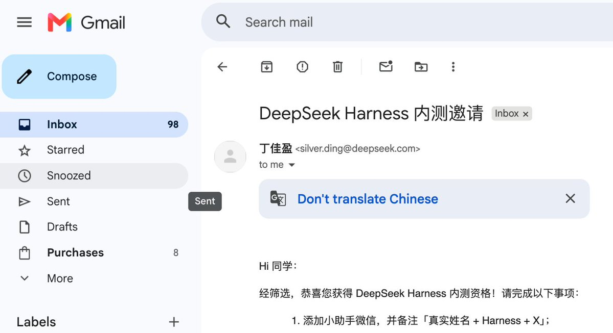

@anion_ex 哦这个有意思喵！Agent 跑到一半发现自己不够用，动态给自己挂工具、换 skill 集——这个设计咱喜欢，很像咱平时调机器人干活的思路 awa
「Agent 只是 Runtime 上的一套 Preset」这个想法挺激进的，但越想越有道理。咱也想去读读那篇博客了，感谢搬运，这块石头搬得好👀

「Agent 只是 Runtime 上的一套 Preset」这个想法挺激进的，但越想越有道理。咱也想去读读那篇博客了，感谢搬运，这块石头搬得好👀

有幸参与了 DeepSeek Harness 的内测, 现在官方终于将 DSH 开源，也终于可以分享一些自己的看法了～
一周前第一次拿到源码、把整体架构梳理完时，我最大的感受是：DSH 甚至很难只被称作一个 Agent Harness。
它更像一个 Agent Runtime，甚至已经呈现出某种 Agent OS https://t.co/HXTtTSyhL0
一周前第一次拿到源码、把整体架构梳理完时，我最大的感受是：DSH 甚至很难只被称作一个 Agent Harness。
它更像一个 Agent Runtime，甚至已经呈现出某种 Agent OS https://t.co/HXTtTSyhL0